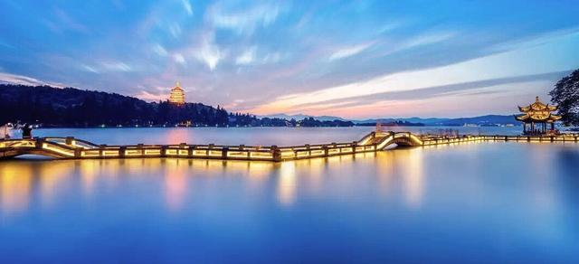

Here is the gallery for attractions and hotels, but I haven't decided whether to arrange other content here.
A mere gallery might make the page monotonous, I might adjust this part.
We hope you can help other travelers make travel plans by uploading photos of attractions or hotels

In the distant view of the West Lake under the night light, you can see the Broken Bridge
of the West Lake and the Leifeng Pagoda in the distance. The lights and lake light illuminate the
scenery very beautifully.
Little Alley in the Hangzhou City,Tourists are playing in the alleys, the surrounding
buildings are beautiful
The Fall of the Pagoda,Leifeng Pagoda under the setting sun, a bird's-eye view of the scene
when the sun sets
Lingyin Temple. Ancient plaque in Lingyin Temple
The Bund night view, Night view of the Bund lights under time-lapse photography
yuyuan garden, Yuyuan Lantern Festival, a traditional large-scale gathering site
China pavilion at Expo 2010, The architectural appearance of the China Pavilion is based on
the theme of "the crown of the East, the prosperity of China, the granary of the world, and the
prosperity of the people", representing the spirit and temperament of Chinese culture
Tiananmen Square is a city square located in the center of Beijing, China, one of the
largest city squares in the world
Temple of Heaven, The Temple of Heaven, founded in the first half of the 15th century, is a
dignified complex of fine cult buildings set in gardens and surrounded by historic pine woods.
The Great Wall of China, The history of the Great Wall of China began when China's first
emperor, Qin Shihuang, connected fortifications built by various countries during the Spring and Autumn
and Warring States periods to protect his newly established Qin Dynasty from the invasion of nomadic
peoples in the interior.
Nest-type Beijing Olympic Stadium, Built on the Olympic Green, Beijing National Stadium, or
the Bird’s Nest Stadium, as it has become known, is the biggest stadium in Beijing and an important
Olympic venue, which staged the 2008 Summer Olympics.